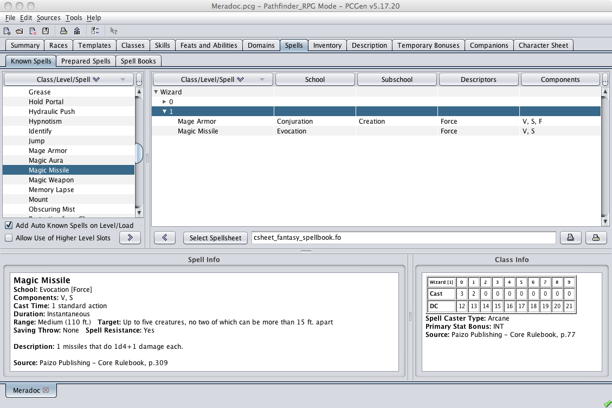
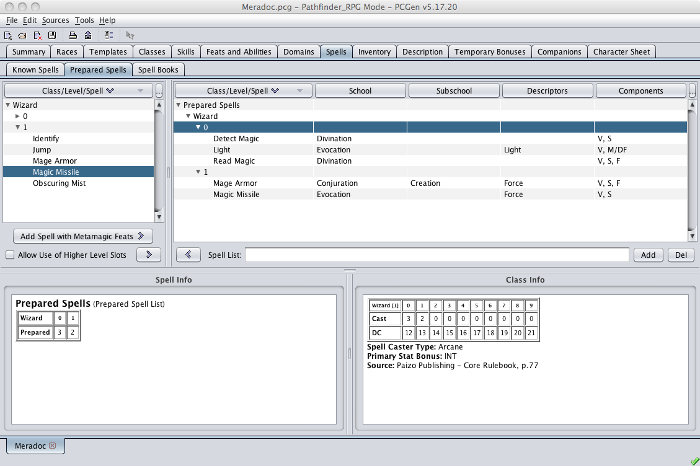
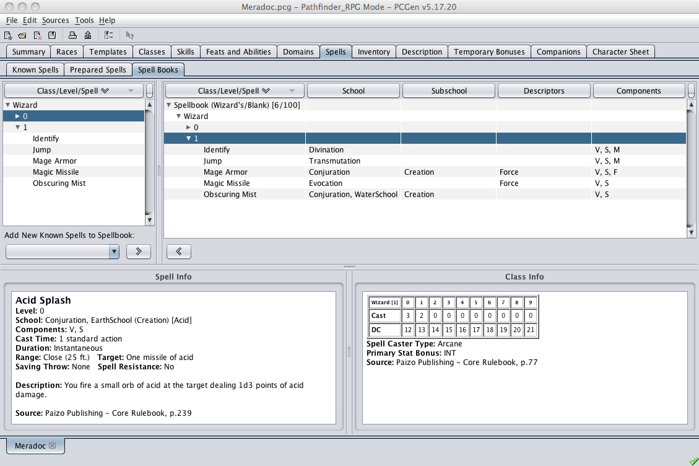

The Spells tab is where a spellcasting character can select spells.

The Spells Tab is divided into three sub-tabs: Known Spells, Prepared Spells and Spell Books.
The Known Spells sub-tab is used to add spells to the PC's Known Spells lists.
The upper left frame is where you can select which Class , and Level you wish to be displayed in the spells tables below.
Each spell casting class will display a list on the left of all available spells the PC could potentially learn. All spell casters have a Known Spells list - in this list are all the spells the caster knows. Spells can be added from the complete spell list on the right in accordance to class limitations.
A spell caster who must prepare spell ahead of time can use the Prepared Spells sub-tab to create Prepared Spell lists.
A spell caster who must record spells in a spellbook can use the Spell Books sub-tab to track which spells are kept in which books.

The Prepared Spells sub-tab is used to create lists of spells from the PC's Known Spells lists which represent spells the caster has at the ready.
Spell casters, which can memorize spells, can type in a name in the Spell List field and then:
Only spell casters that memorize spells can create prepared spell lists.
Typical uses of this are for creating a book named "Underground" to hold which spells used when in a dungeon-crawl, or a book named "In Town" to indicate which spells used when in a town adventure.

The Spell Books sub-tab is used to track physical spellbooks the spell caster possesses.
If your class uses a Spellbook to record spells in you can use the Spell Books sub-tab to track your spellbooks. First you will need to add one of these items to your inventory. The Spellbook (Wizard's/Blank) and the Blessed Book items are specifically set up for this purpose, when either item is added to your PC's list of equipment they will also appear on the Spell Books sub-tab. It is suggested that you customize the Spellbook (Wizard's/Blank) item to give it a unique name (such as "Merlin's Spellbook Vol 1") making it easier to keep track of. Once you have a spellbook in your inventory you can add your known spells to it, each spell will take the proper number of pages according to the rules making it easy to know when it's time to buy another spellbook.